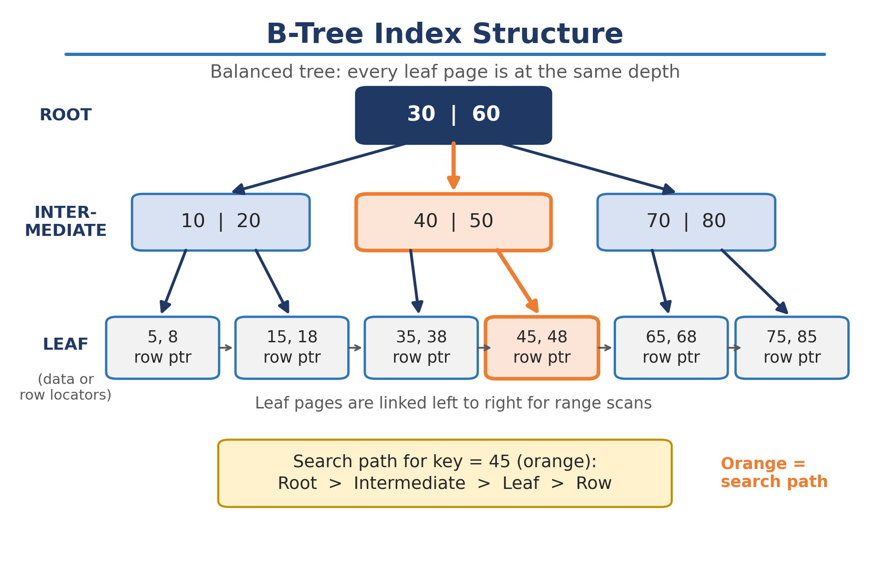
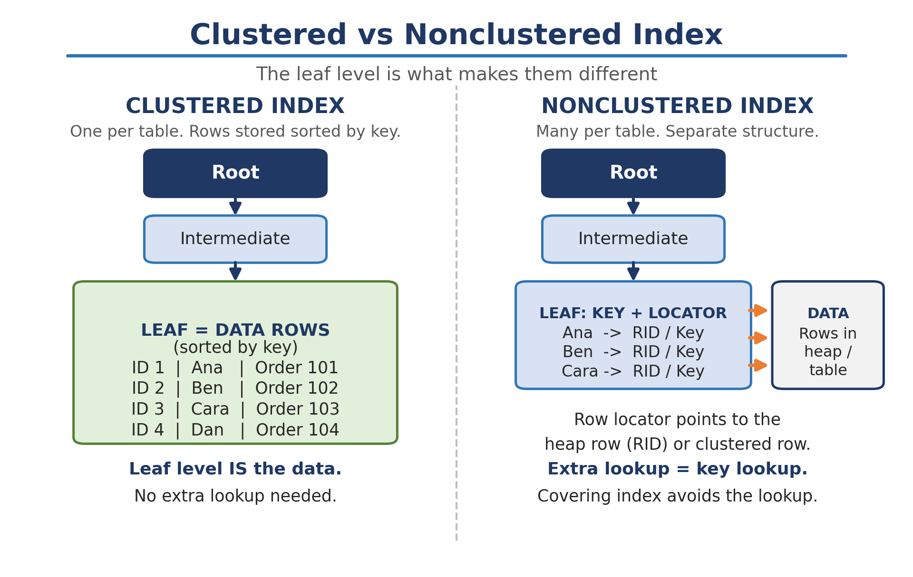

Chapter 7: Indexing
Indexes are the main reason a selective query can find a few rows in a large table without reading every page. This chapter explains how indexes are stored, when the optimizer seeks, scans, or looks up rows, and which index designs help or hurt. It also covers fragmentation, fill factor, and how to judge missing and unused index recommendations.
In this chapter:
Key learning: A good index matches the filter, join, and sort pattern of the query so SQL Server can seek to a small set of rows instead of scanning. Every extra index costs write time, storage, and maintenance, so index design is a trade-off between read speed and write cost.
Q61. What is an index, and how is a B-tree structured?
Answer: An index is a separate, ordered copy of key columns plus pointers to the rows, built so SQL Server can locate rows quickly without scanning the whole table. It works like the index in a book: you look up a value in sorted order and jump straight to the page instead of reading from the start.
SQL Server rowstore indexes use a B-tree, which is a balanced tree with three levels. The root page sits at the top, intermediate pages guide the search down, and leaf pages hold the entries. The tree stays balanced, so a seek follows a short path from root to leaf no matter which key value is requested.
For a clustered index, the leaf level is the data rows themselves. For a nonclustered index, the leaf level holds the key values plus a row locator, which is the clustered key if the table has a clustered index, or a row identifier if the table is a heap.
CREATE NONCLUSTERED INDEX IX_Orders_CustomerID
ON dbo.Orders (CustomerID);Key learning: An index is an ordered B-tree that lets SQL Server navigate from the root to the leaf level to find matching rows instead of scanning the table.

Animated: follow key 45 down the B-tree.
1 · Root: 45 is between 30 and 60 — go to the middle page.
2 · Intermediate: 45 is between 40 and 50 — go to the leaf.
3 · Leaf: 45 found. One page read per level.
Q62. What is the difference between a clustered index and a nonclustered index?
Answer: A clustered index defines the physical storage order of the table, and its leaf level contains the full data rows. A table can have only one clustered index because the rows can only be stored in one order. By default, a primary key creates a clustered index unless a nonclustered primary key is specified.
A nonclustered index is a separate structure whose leaf level contains the key columns plus a row locator. It does not change the order of the data rows. A table can have many nonclustered indexes, and each one is useful for a different filter, join, or sort pattern.
In practice, choose the clustered key for the most common range or lookup pattern, and keep it narrow, unique, stable, and ever-increasing when possible. Use nonclustered indexes for additional access paths without duplicating the whole table.
CREATE TABLE dbo.Orders
(
OrderID INT NOT NULL,
CustomerID INT NOT NULL,
OrderDate DATE NOT NULL,
Status VARCHAR(20) NOT NULL,
TotalAmount DECIMAL(10, 2) NOT NULL,
CONSTRAINT PK_Orders PRIMARY KEY CLUSTERED (OrderID)
);
CREATE NONCLUSTERED INDEX IX_Orders_CustomerID
ON dbo.Orders (CustomerID);Key learning: The clustered index stores the data rows in key order and there can be only one, while nonclustered indexes are separate ordered structures that point back to the rows.

Q63. What is a heap, and when is a heap acceptable?
Answer: A heap is a table with no clustered index, so rows have no enforced order and are stored in no particular sequence. SQL Server tracks heap pages through Index Allocation Map pages, and each row is located by a row identifier made of file, page, and slot. When a row grows and no longer fits on its page, SQL Server may move it and leave a forwarding pointer behind.
Heaps are acceptable in narrow cases: small staging tables, bulk load targets that are read once and truncated, write-only logging tables, or very small tables where a scan is cheap. They can load fast because there is no B-tree order to maintain.
Heaps are a poor choice for large tables that need selective lookups, range queries, joins, or frequent updates. Without a clustered index, lookups become table scans, updates can chase forwarding pointers, and deletes can leave wasted space that is not reclaimed as cleanly.
CREATE TABLE dbo.OrderStaging
(
OrderID INT NOT NULL,
CustomerID INT NOT NULL,
OrderDate DATE NOT NULL,
TotalAmount DECIMAL(10, 2) NOT NULL
);
SELECT name, type_desc
FROM sys.indexes
WHERE object_id = OBJECT_ID('dbo.OrderStaging');Key learning: A heap is an unordered table with no clustered index, and it is acceptable mainly for staging and bulk load work rather than for large tables that need selective lookups.
Q64. How do you find duplicate and overlapping indexes, and what do you do about them?
Answer: A duplicate index has the same key columns in the same order as another index on the same table, so it can never help a query the other index cannot already serve. An overlapping index is a weaker case: its leading columns are a leftmost subset of a wider index, so the wider index can usually serve the same seeks. Both kinds accumulate over time, from cautious adds, from missing-index suggestions applied without checking what already exists, and from migrations that recreate indexes.
Duplicates cost real money: every insert, update, and delete must maintain every index, they consume storage and backup space, they slow down index maintenance, and they give the optimizer more plans to consider. Find candidates by grouping sys.indexes by table and key columns, or with a community script such as sp_BlitzIndex, which flags exact duplicates and near-duplicates. Before dropping anything, check sys.dm_db_index_usage_stats for seeks, scans, and lookups: an index with no reads and many writes is a removal candidate, but usage stats reset on restart, so collect them over a full workload cycle. The safe sequence is disable the index first, watch for regressions over a representative period, then drop it.
-- Usage per index: no reads plus many writes marks a removal candidate
SELECT OBJECT_NAME(i.object_id) AS TableName,
i.name AS IndexName,
s.user_seeks, s.user_scans, s.user_lookups, s.user_updates
FROM sys.indexes AS i
LEFT JOIN sys.dm_db_index_usage_stats AS s
ON s.object_id = i.object_id
AND s.index_id = i.index_id
AND s.database_id = DB_ID()
WHERE i.object_id = OBJECT_ID('dbo.Orders')
ORDER BY s.user_seeks + s.user_scans DESC;
-- Safe removal: disable first, monitor, then drop
ALTER INDEX IX_Orders_Duplicate ON dbo.Orders DISABLE;
-- After a full workload cycle with no regression:
DROP INDEX IX_Orders_Duplicate ON dbo.Orders;Key learning: Duplicate indexes have identical key columns and overlapping indexes are leftmost subsets of wider ones; both waste writes and storage, so find them in sys.indexes, confirm with usage stats, disable first, then drop.
Q65. What is the difference between an index seek, an index scan, and a table scan?
Answer: An index seek navigates the B-tree to a specific key value or range and reads only the pages that match. It is the efficient choice for selective predicates, such as one customer out of a million, because most of the index is never touched.
An index scan reads the whole leaf level of an index from start to finish. It can still beat a table scan when the index is narrower than the table, but it reads every key. The optimizer chooses a scan when a large fraction of rows is needed, when there is no selective predicate, or when the index covers the query and a scan is cheaper than many seeks.
A table scan reads every page of a heap because there is no B-tree to navigate. It is the only option for an unselective query against a heap, and it is expensive on large tables.
SELECT OrderID, TotalAmount
FROM dbo.Orders
WHERE CustomerID = 101;
SELECT CustomerID, COUNT(*) AS OrderCount
FROM dbo.Orders
GROUP BY CustomerID;
SELECT OrderID, CustomerID
FROM dbo.OrderStaging;Key learning: A seek reads only matching index entries, an index scan reads the whole index leaf level, and a table scan reads every page of a heap.
Q66. What is a key lookup, and why does it matter?
Answer: A key lookup happens when a nonclustered index seek finds matching rows but the index does not contain every column the query needs. SQL Server must then look up each row in the clustered index using the row locator to fetch the missing columns. In older versions and plans this was called a bookmark lookup, and for a heap the equivalent is an RID lookup.
Key lookups matter because their cost grows row by row. One lookup is cheap, but thousands of lookups mean thousands of random reads into the clustered index, plus extra CPU and logical reads. At some point the optimizer decides a scan is cheaper than many seeks plus lookups, which is why adding a column to the SELECT list can change a plan from a seek to a scan.
The usual fixes are to add the missing columns with INCLUDE to make a covering index, to select fewer columns, or to accept the scan when the query genuinely needs a large share of the table.
CREATE NONCLUSTERED INDEX IX_Orders_CustomerID_Narrow
ON dbo.Orders (CustomerID);
SELECT OrderID, CustomerID, OrderDate, TotalAmount
FROM dbo.Orders
WHERE CustomerID = 101;Key learning: A key lookup fetches missing columns from the clustered index for each row found by a nonclustered seek, and it becomes expensive when many rows need lookups.
Q67. What is a covering index, and how do INCLUDE columns work?
Answer: A covering index contains every column a query needs, so the query can be satisfied from the index alone with no key lookup. Covering indexes are fast because the index is usually narrower than the table, so fewer pages are read, and every row is found in one ordered structure.
INCLUDE columns are non-key columns stored only at the leaf level of a nonclustered index. They do not affect the sort order of the index and do not count toward the key column limits in the same way, but they are available for lookups to avoid. Put filter, join, and sort columns in the key list, and put columns that are only returned in the INCLUDE list.
Keep covering indexes focused. Including every column makes the index nearly as wide as the table, which increases storage, write cost, and maintenance without adding seek value.
CREATE NONCLUSTERED INDEX IX_Orders_CustomerID_Covering
ON dbo.Orders (CustomerID)
INCLUDE (OrderDate, TotalAmount);
SELECT CustomerID, OrderDate, TotalAmount
FROM dbo.Orders
WHERE CustomerID = 101;Key learning: A covering index holds all columns a query needs so no key lookup is required, and INCLUDE adds returned columns at the leaf level without changing the index key order.
Q68. What is a filtered index, and what are its use cases and limitations?
Answer: A filtered index is a nonclustered index that covers only the rows matching a WHERE predicate, such as open orders or non-null email addresses. Because it is smaller, it needs less storage, less maintenance, and often has more accurate statistics for the filtered subset than a full index would.
Common use cases are skewed columns where queries almost always filter on one value, such as active rows, unprocessed rows, or a status that applies to a small share of the table. A filtered unique index can also enforce uniqueness only for the filtered rows, for example one active subscription per customer while allowing many cancelled ones.
Limitations include that filtered indexes must be nonclustered, the predicate must be simple and deterministic, and the optimizer only considers the index when the query predicate implies the filter predicate. The connection settings used to create the index, such as QUOTED_IDENTIFIER and ANSI_NULLS, must also match when the query runs, or the index may not be considered.
CREATE NONCLUSTERED INDEX IX_Orders_Open_CustomerID
ON dbo.Orders (CustomerID)
WHERE Status = 'Open';
SELECT OrderID, CustomerID
FROM dbo.Orders
WHERE Status = 'Open' AND CustomerID = 101;Key learning: A filtered index indexes only the rows matching its predicate, which makes it small and selective but usable only when the query filter matches that predicate.
Q69. What is a columnstore index, and what is the difference between clustered and nonclustered columnstore?
Answer: A columnstore index stores data column by column instead of row by row, compresses each column segment, and processes data in batches. That design is ideal for analytic queries that scan millions of rows and aggregate a few columns, because SQL Server reads only the columns needed and skips whole segments that cannot match.
A clustered columnstore index is the primary storage for the table: the table itself is stored as a columnstore, organized into compressed rowgroups of up to about one million rows plus a deltastore for new and changed rows. There is no separate rowstore clustered index on the same table.
A nonclustered columnstore index is a secondary, read-optimized copy on top of a rowstore table. The rowstore table keeps serving point lookups and transactions, while analytic queries can use the columnstore copy. Choose columnstore for warehousing and reporting on large tables, and avoid it for narrow tables, heavy singleton lookups, or workloads dominated by single-row updates and deletes.
CREATE TABLE dbo.Sales
(
SaleID INT NOT NULL,
ProductID INT NOT NULL,
SaleDate DATE NOT NULL,
Amount DECIMAL(10, 2) NOT NULL
);
CREATE CLUSTERED COLUMNSTORE INDEX CCI_Sales
ON dbo.Sales;
CREATE NONCLUSTERED COLUMNSTORE INDEX NCCI_Orders_Analytics
ON dbo.Orders (CustomerID, OrderDate, TotalAmount);Key learning: Columnstore indexes store and compress data by column for fast large scans and aggregations, with clustered columnstore as the main storage and nonclustered columnstore as an extra analytic copy over a rowstore table.
Q70. What is a composite index, and how does column order and the leftmost prefix rule work?
Answer: A composite index is an index with more than one key column, sorted first by the first column, then by the second within each first-column value, and so on. Column order therefore decides which queries can seek efficiently, because the B-tree is only ordered in that sequence.
The leftmost prefix rule says the index can be used for seeks on a leading run of columns: the first column alone, the first two columns, and so on. An index on LastName and FirstName supports seeks on LastName, and on LastName plus FirstName, but it cannot seek efficiently on FirstName alone because first names are scattered throughout the index.
A practical order is equality columns first, then columns used for range filters or sorting, with the most selective equality column first when several equality columns compete. Also consider the sort: an index ordered the same way as an ORDER BY can avoid a Sort operator.
CREATE NONCLUSTERED INDEX IX_Customers_Name
ON dbo.Customers (LastName, FirstName);
SELECT CustomerID, LastName, FirstName
FROM dbo.Customers
WHERE LastName = 'Patel' AND FirstName = 'Anita';
SELECT CustomerID, LastName, FirstName
FROM dbo.Customers
WHERE FirstName = 'Anita';Key learning: In a composite index the column order defines the sort order, so seeks work efficiently only on a leading run of columns starting from the leftmost column.
Q71. What is the difference between a SARGable and a non-SARGable predicate?
Answer: A SARGable predicate, from Search ARGument, is written so the optimizer can use an index seek to find matching rows. Typical SARGable forms are direct comparisons on the bare column, such as equals, greater than, less than, BETWEEN, IN with a list, and a LIKE pattern with a fixed prefix.
A non-SARGable predicate prevents a seek because SQL Server must evaluate an expression for every row before it knows whether the row matches. Common causes are functions on the column, arithmetic on the column, a leading wildcard in LIKE, and applying a conversion to the column. In those cases the optimizer usually falls back to a scan, even when a useful index exists.
The fix is to rewrite the predicate so the column stands alone on one side. For example, replace a year function with a date range, replace arithmetic on the column with arithmetic on the constant, and avoid leading wildcards when a prefix search will do.
SELECT OrderID, OrderDate
FROM dbo.Orders
WHERE OrderDate >= '2026-01-01' AND OrderDate < '2027-01-01';
SELECT OrderID, OrderDate
FROM dbo.Orders
WHERE YEAR(OrderDate) = 2026;
SELECT CustomerID, LastName
FROM dbo.Customers
WHERE LastName LIKE 'Pat%';
SELECT CustomerID, LastName
FROM dbo.Customers
WHERE LastName LIKE '%atel';Key learning: A SARGable predicate compares the bare indexed column directly so a seek is possible, while a non-SARGable predicate wraps the column in a function or expression and usually forces a scan.
Q72. What is implicit conversion, and how does it affect index usage?
Answer: Implicit conversion happens when SQL Server compares values of different data types and silently converts one side to the other using data type precedence. The classic case is a varchar column compared to an nvarchar parameter or literal, where the column values must be converted to nvarchar before comparison.
When the conversion is applied to the indexed column, the predicate becomes non-SARGable: SQL Server cannot seek on converted values, so it scans the index or table and converts every row. Plans show a warning for an expression with CONVERT_IMPLICIT, and the scan also risks wrong row estimates because the converted comparison is harder for the optimizer to reason about.
The fix is to match types at the source: declare parameters and variables with the same type as the column, remove the N prefix when comparing to a varchar column, or change the column type if the application genuinely needs Unicode. Never fix it by converting the column in the query, because that keeps the scan.
SELECT CustomerID, Email
FROM dbo.Customers
WHERE Email = N'anita@example.com';
SELECT CustomerID, Email
FROM dbo.Customers
WHERE Email = 'anita@example.com';
DECLARE @Email VARCHAR(100) = 'anita@example.com';
SELECT CustomerID, Email
FROM dbo.Customers
WHERE Email = @Email;Key learning: Implicit conversion forces SQL Server to convert the indexed column values during comparison, which blocks seeks, causes scans, and should be fixed by matching the parameter type to the column type.
Q73. What is index fragmentation, internal versus external, and when should you rebuild versus reorganize?
Answer: External fragmentation, also called logical fragmentation, means the logical order of pages in the index does not match their physical order on disk, so a range scan jumps around instead of reading sequentially. It is reported as avg_fragmentation_in_percent in the physical stats function.
Internal fragmentation means pages are partly empty, so the index holds more pages than it needs and scans read more pages to return the same rows. It shows up as a low avg_page_space_used_in_percent. Both are usually caused by page splits from inserts and updates, and by deletes that leave empty space.
Reorganize defragments the leaf level in place, is always online, uses few resources, and is suited to moderate fragmentation. Rebuild creates a fresh copy of the index, removes both kinds of fragmentation, and updates index statistics, but costs more and needs care on large tables. The old rule of thumb, reorganize from 5 percent to 30 percent fragmentation and rebuild above 30 percent, is no longer the right answer: Microsoft's current guidance is measure-first, and on SSD and NVMe storage fragmentation matters far less than it did on spinning disks, because random reads are cheap and the real costs are page density and write amplification. Before rebuilding, try updating statistics first, check page_count and avg_page_space_used_in_percent, and confirm the index actually hurts a real query. Many DBAs now reorganize rarely, rebuild only when page density is low or a query measurably improves, and otherwise leave the index alone.
SELECT index_id, avg_fragmentation_in_percent, avg_page_space_used_in_percent, page_count
FROM sys.dm_db_index_physical_stats(DB_ID(), OBJECT_ID('dbo.Orders'), NULL, NULL, 'LIMITED');
ALTER INDEX IX_Orders_CustomerID ON dbo.Orders REORGANIZE;
ALTER INDEX IX_Orders_CustomerID ON dbo.Orders REBUILD WITH (ONLINE = ON);Key learning: External fragmentation is pages stored out of logical order and internal fragmentation is wasted space inside pages; decide rebuild versus reorganize from measured page density and query impact, not from a fixed percentage, and try a statistics update first.
Q74. What is fill factor, and what are its purpose and trade-offs?
Answer: Fill factor is the percentage of each leaf page that SQL Server fills when an index is created or rebuilt, leaving the rest free for future inserts and updates. A fill factor of 80 leaves about 20 percent of each page empty, while the default of 0 means pages are filled to 100 percent.
The purpose is to reduce page splits on tables with heavy inserts or updates that grow rows. When a page has free space, a new row can fit on the existing page instead of forcing a split that moves half the rows to a new page and fragments the index.
The trade-off is size and read cost: a lower fill factor means more pages, more storage, more memory use, and more pages to scan. Use 100 percent or the default for read-only and append-only tables, and a lower value such as 70 to 90 for insert-heavy tables where splits are actually observed. Fill factor applies only at creation and rebuild time; normal inserts and updates do not maintain it.
CREATE NONCLUSTERED INDEX IX_Orders_CustomerID_Fill
ON dbo.Orders (CustomerID)
WITH (FILLFACTOR = 80);
ALTER INDEX IX_Orders_CustomerID ON dbo.Orders
REBUILD WITH (FILLFACTOR = 80, ONLINE = ON);Key learning: Fill factor reserves free space on index pages at build time to reduce page splits, trading larger indexes and slower scans for fewer splits on insert-heavy tables.
Q75. How do the missing index DMVs work, and what are their limits?
Answer: SQL Server records index suggestions in the missing index dynamic management views whenever the optimizer thinks an index would have helped a query. The details view gives the table and the equality, inequality, and included columns, the group views link queries to suggestions, and the group stats view gives usage counts, average cost, and average user impact so suggestions can be ranked by an improvement measure.
These views are a starting point, not a build list. They reset when SQL Server restarts, they reflect only the workload seen since then, and they ignore the write and maintenance cost of each new index. They also produce overlapping and duplicate suggestions, propose wide indexes, and do not understand column order trade-offs or existing indexes that could be widened instead.
Before creating anything, consolidate overlapping suggestions, compare them with existing indexes, test the candidate on a realistic workload, and check the impact on writes. Never apply every suggestion blindly, especially on transactional tables.
SELECT
migs.avg_total_user_cost * migs.avg_user_impact * (migs.user_seeks + migs.user_scans) AS improvement_measure,
mid.statement,
mid.equality_columns,
mid.inequality_columns,
mid.included_columns,
migs.user_seeks,
migs.user_scans,
migs.avg_total_user_cost,
migs.avg_user_impact
FROM sys.dm_db_missing_index_groups AS mig
INNER JOIN sys.dm_db_missing_index_group_stats AS migs
ON migs.group_handle = mig.index_group_handle
INNER JOIN sys.dm_db_missing_index_details AS mid
ON mig.index_handle = mid.index_handle
ORDER BY improvement_measure DESC;Key learning: Missing index views rank suggestions by estimated benefit, but they ignore write cost, overlap heavily, and reset on restart, so they must be consolidated and tested before any index is created.
Q76. What does a basic index maintenance strategy cover, and how do you find unused indexes?
Answer: A basic strategy keeps indexes efficient without rebuilding everything every night. It checks fragmentation and page counts on a schedule, reorganizes moderately fragmented indexes, rebuilds heavily fragmented ones, updates statistics, and runs the heavier work off-peak with online operations where the edition supports them. Many teams implement this with a maintained script set such as Ola Hallengren maintenance scripts, with thresholds, time limits, and logging, rather than rebuilding all indexes blindly.
Unused indexes are found with the index usage stats view, which records seeks, scans, lookups, and updates per index since the last restart. A nonclustered index with zero or near-zero seeks, scans, and lookups but many updates is paying write cost for no read benefit and is a candidate for removal.
Be careful before dropping: check a full workload cycle including month-end and quarterly jobs, confirm the index does not support a unique constraint or primary key, and consider disabling first on a large or critical table so the change can be reversed without a full rebuild. Dropping a truly unused index saves write time, storage, and maintenance.
SELECT
OBJECT_NAME(i.object_id) AS table_name,
i.name AS index_name,
i.type_desc,
s.user_seeks,
s.user_scans,
s.user_lookups,
s.user_updates,
s.last_user_seek,
s.last_user_scan
FROM sys.indexes AS i
LEFT JOIN sys.dm_db_index_usage_stats AS s
ON s.object_id = i.object_id
AND s.index_id = i.index_id
AND s.database_id = DB_ID()
WHERE i.object_id = OBJECT_ID('dbo.Orders')
ORDER BY s.user_seeks, s.user_scans;
DROP INDEX IX_Orders_CustomerID_Narrow ON dbo.Orders;Key learning: Index maintenance means scheduled fragmentation checks with targeted reorganize or rebuild plus statistics updates, and unused indexes are identified by high updates with no reads before being carefully removed.
QueryLab — Self-Hosted SQL Performance Workbench
EXPLAIN visualizer · Index advisor · Slow query dashboard · SQL Server